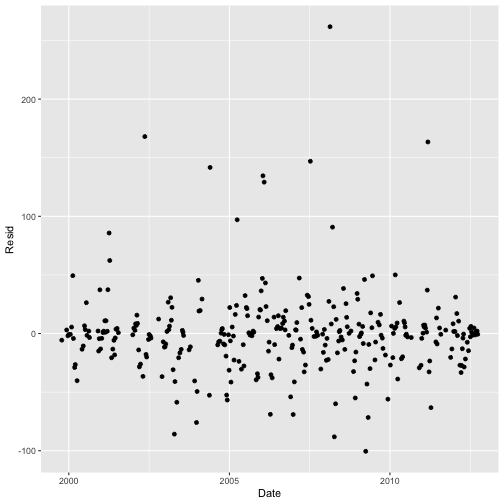
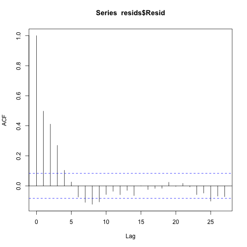

Introduction to loadflex
Alison Appling
13 October, 2026
Source:vignettes/intro_to_loadflex.Rmd
intro_to_loadflex.RmdThe loadflex package lets you quickly fit and compare
concentrations and/or fluxes of solutes in watersheds. This vignette
demonstrates the application of loadflex to fit four
different model types to the same data, to assess and compare those
models, and to estimate average solute concentrations and fluxes at both
quarter-hourly and monthly scales.
We will use the data supplied with the loadflex package.
These include nitrate concentration observations from the Lamprey River
in southeastern New Hampshire, where researchers in the NH Water
Resources Research Center (University of New Hampshire; PI: William H.
McDowell) have been monitoring water quality weekly since 1999.
Discharge data are from the same location, Packers Falls, from a USGS
gaging station (https://waterdata.usgs.gov/monitoring-location/USGS-01073500).
Start by loading the package.
Load the data provided in this package.
# Interpolation data: Packers Falls NO3 grab sample observations
data(lamprey_nitrate)
intdat <- lamprey_nitrate[c("DATE","DISCHARGE","NO3")]
# Calibration data: Restrict to points separated by sufficient time
regdat <- subset(lamprey_nitrate, REGR)[c("DATE","DISCHARGE","NO3")]
# Estimation data: Packers Falls discharge
data(lamprey_discharge)
estdat <- subset(lamprey_discharge, DATE < as.POSIXct("2012-10-01 00:00:00", tz="EST5EDT"))
estdat <- estdat[seq(1, nrow(estdat), by=96/4),] # pare to 4 obs/day for speedCreate a metadata description of the dataset & desired output.
meta <- metadata(constituent="NO3", flow="DISCHARGE",
dates="DATE", conc.units="mg L^-1", flow.units="cfs", load.units="kg",
load.rate.units="kg d^-1", site.name="Lamprey River, NH",
consti.name="Nitrate", site.id='01073500', lat=43.10259, lon=-70.95256)Fit four models: interpolation, linear, rloadest, and composite. Many
variants on these models are possible. For example:
loadInterp models may use any of several interp.fun
options; see ?interpolations. loadLm accepts
any linear model acceptable to lm(), not just the very
simple formula we have used here. loadReg2 functions are
also flexible as specified in the documentation for .
loadComp models accept a linear model as fit by either
loadLm or loadReg2 and any of the interp.fun
options available to loadInterp.
no3_li <- loadInterp(interp.format = "conc", interp.fun = rectangularInterpolation,
data = intdat, metadata = meta)
no3_lm <- loadLm(formula = log(NO3) ~ log(DISCHARGE), pred.format = "conc",
data = regdat, metadata = meta, retrans = exp)
library(rloadest)
no3_lr <- loadReg2(loadReg(NO3 ~ model(9), data = regdat,
flow = "DISCHARGE", dates = "DATE", time.step = "instantaneous",
flow.units = "cfs", conc.units = "mg/L", load.units = "kg",
station='Lamprey River, NH'))
no3_lc <- loadComp(reg.model = no3_lr, interp.format = "conc",
interp.data = intdat, store = c("data", "fitting.function", "uncertainty"))You can inspect these models in a variety of model-specific ways. Here are some commands to try:
getMetadata(no3_li)## Metadata for a load model
## -NAME- -VALUE-
## constituent NO3
## consti.name Nitrate
## flow DISCHARGE
## load.rate
## dates DATE
## conc.units mg L^-1
## flow.units ft^3 s^-1
## load.units kg
## load.rate.units kg d^-1
## station
## site.name Lamprey River, NH
## site.id 01073500
## lat 43.10259
## lon -70.95256
## basin.area NA
## flow.site.name
## flow.site.id
## flow.lat NA
## flow.lon NA
## flow.basin.area NA
## basin.area.units km^2
get('formula', environment(getFittingFunction(no3_lm)))## log(NO3) ~ log(DISCHARGE)
getFittedModel(no3_lr)## *** Load Estimation ***
##
## Station: Lamprey River, NH
## Constituent: NO3
##
## Number of Observations: 318
## Number of Uncensored Observations: 318
## Center of Decimal Time: 2006.382
## Center of ln(Q): 4.9433
## Period of record: 1999-10-12 17:10:00 to 2012-09-25 10:34:59
##
## Selected Load Model:
## --------------------
##
## NO3 ~ model(9)
##
## Model coefficients:
## Estimate Std. Error z-score p-value
## (Intercept) 4.119184 0.027599 149.2493 0.0000
## lnQ 0.803626 0.018832 42.6744 0.0000
## lnQ2 -0.039398 0.010044 -3.9224 0.0001
## DECTIME 0.002079 0.004472 0.4648 0.6384
## DECTIME2 -0.008695 0.001312 -6.6282 0.0000
## sin.DECTIME 0.263894 0.029630 8.9064 0.0000
## cos.DECTIME 0.198111 0.023759 8.3382 0.0000
##
## AMLE Regression Statistics
## Residual variance: 0.08273
## R-squared: 93.28 percent
## G-squared: 858.8 on 6 degrees of freedom
## P-value: <0.0001
## Prob. Plot Corr. Coeff. (PPCC):
## r = 0.9914
## p-value = 0.0012
## Serial Correlation of Residuals: 0.3061
##
## Variance Inflation Factors:
## VIF
## lnQ 1.651
## lnQ2 1.031
## DECTIME 1.022
## DECTIME2 1.078
## sin.DECTIME 1.431
## cos.DECTIME 1.206
##
## Comparison of Observed and Estimated Loads
## ------------------------------------------
## Summary Stats: Loads in kg/d
## ---------------------------------------------
## Min 25% 50% 75% 90% 95% Max
## Est 2.76 37.2 78.3 148 230 291 551
## Obs 1.77 36.7 77.1 135 242 314 651
##
## Bias Diagnostics
## ----------------
## Bp: -0.1701 percent
## PLR: 0.9983
## E: 0.8856
head(getFittingData(no3_lc))## DATE DISCHARGE NO3
## 24 1999-10-05 18:00:00 84.0000 0.0913
## 25 1999-10-12 17:10:00 83.0000 0.0826
## 33 1999-12-07 15:20:00 363.6667 0.1138
## 34 1999-12-14 14:30:00 271.0000 0.0858
## 35 1999-12-21 13:45:00 318.0000 0.1213
## 36 1999-12-28 09:04:59 232.5670 0.1201
ggplot2::qplot(x=Date, y=Resid, data=getResiduals(no3_lr, newdata=regdat))
estimateRho(no3_lr, "conc", newdata=intdat, irreg=TRUE)$rho
## [1] 0.4978788
summary(getFittedModel(no3_lm))##
## Call:
## lm(formula = formula, data = data)
##
## Residuals:
## Min 1Q Median 3Q Max
## -0.77044 -0.30404 0.00749 0.27882 1.28997
##
## Coefficients:
## Estimate Std. Error t value Pr(>|t|)
## (Intercept) -1.59404 0.09640 -16.536 <2e-16 ***
## log(DISCHARGE) -0.05641 0.01819 -3.101 0.0021 **
## ---
## Signif. codes: 0 '***' 0.001 '**' 0.01 '*' 0.05 '.' 0.1 ' ' 1
##
## Residual standard error: 0.3569 on 316 degrees of freedom
## Multiple R-squared: 0.02953, Adjusted R-squared: 0.02646
## F-statistic: 9.617 on 1 and 316 DF, p-value: 0.002102
residDurbinWatson(no3_lr, "conc", newdata=regdat, irreg=TRUE, plot.acf = FALSE)## [1] 1.319662
getCorrectionFraction(no3_lc, "flux", newdat=intdat)## [1] 0.2187752Now generate point predictions from each model.
preds_li <- predictSolute(no3_li, "flux", estdat, se.pred=TRUE)
preds_lm <- predictSolute(no3_lm, "flux", estdat, se.pred=TRUE, lin.or.log="linear")
preds_lr <- predictSolute(no3_lr, "flux", estdat, se.pred=TRUE)
preds_lc <- predictSolute(no3_lc, "flux", estdat, se.pred=TRUE)A few lines from one of the resulting prediction data.frames:
head(preds_lr)## date flux se.pred
## 1 1999-10-01 01:00:00 15.72780 4.722913
## 2 1999-10-01 07:00:00 16.68311 5.010515
## 3 1999-10-01 13:00:00 17.39594 5.225214
## 4 1999-10-01 19:00:00 16.94764 5.090053
## 5 1999-10-02 01:00:00 16.72981 5.024355
## 6 1999-10-02 07:00:00 16.51078 4.958313The loadflex process for aggregation of point
predictions (to monthly, annual, etc.) has changed since we published
our 2015 manuscript. aggregateSolute from that manuscript
is no longer exported as a function in loadflex. Instead, you can use
the agg.by argument to predictSolute to
generate predictions at the time interval of interest.
You can aggregate for for months, water years, calendar years, or
other time intervals, and for mean concentration (named
conc in the output) or flux (flux.rate in the
output, using “rate” to remind users that the time denominator does not
change regardless of the time period being aggregated over).
Standard errors (se.fit and se.pred) are
available for loadReg2 flux models (but see https://github.com/USGS-R/rloadest/issues/30 and https://github.com/DOI-USGS/loadflex/issues/262).
loadReg2 conc models also support aggregation, but only to
day.
The units of the aggregated output are what you passed into each
model as metadata. count reports the number of observations
going into the aggregated estimate in each row. Some examples:
getUnits(getMetadata(no3_lr), 'conc')## [1] "mg L^-1"
agg_c_li <- predictSolute(no3_li, "conc", newdata = estdat, agg.by = "water year")
agg_c_lm <- predictSolute(no3_lm, "conc", newdata = estdat, agg.by = "calendar year")
agg_c_lr <- predictSolute(no3_lr, "conc", newdata = estdat, agg.by = "day", se.fit = TRUE, se.pred = TRUE)
agg_c_lc <- predictSolute(no3_lc, "conc", newdata = estdat, agg.by = "month")
getUnits(getMetadata(no3_lr), 'flux rate')## [1] "kg d^-1"
agg_f_li <- predictSolute(no3_li, "flux", newdata = estdat, agg.by = "day")
agg_f_lm <- predictSolute(no3_lm, "flux", newdata = estdat, agg.by = "water year")
agg_f_lr <- predictSolute(no3_lr, "flux", newdata = estdat, agg.by = "month", se.fit = TRUE, se.pred = TRUE)
agg_f_lc <- predictSolute(no3_lc, "flux", newdata = estdat, agg.by = "total")A few lines from some of the resulting aggregated flux data.frames:
agg_c_li## water.year conc count
## 1 2000 0.1165354 1464
## 2 2001 0.1467814 1460
## 3 2002 0.1783221 1460
## 4 2003 0.1463932 1460
## 5 2004 0.1672477 1464
## 6 2005 0.1613692 1460
## 7 2006 0.1683125 1460
## 8 2007 0.1864791 1460
## 9 2008 0.1552109 1464
## 10 2009 0.1458179 1460
## 11 2010 0.1302498 1460
## 12 2011 0.1367034 1460
## 13 2012 0.1297170 1464
head(agg_c_lm)## calendar.year conc count
## 1 1999 0.1603043 368
## 2 2000 0.1623410 1464
## 3 2001 0.1700511 1460
## 4 2002 0.1713046 1460
## 5 2003 0.1622097 1460
## 6 2004 0.1619884 1464
head(agg_f_lr)## month count.days flux.rate se.fit se.pred
## 1 1999-10 31 40.94773 2.739797 2.590990
## 2 1999-11 30 63.30012 3.966930 3.602738
## 3 1999-12 31 83.90806 4.765753 4.629322
## 4 2000-01 31 93.50012 4.818706 5.327664
## 5 2000-02 29 96.52117 4.720724 6.159949
## 6 2000-03 31 218.47354 12.663481 12.175463
agg_f_lc## total flux.rate count
## 1 1 103.2865 18996